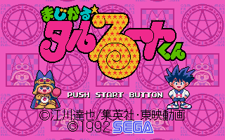

Magical Taruruuto-kun - Genesis Games

- Company: Sega
- Date Released: 24 April 1992
- Price (in yen): 3880
- Genre: Platform game
Controls
- A button: Use Magic
- B button: Attack
- C button: Jump
- Start: Pause
There are two ways of defeating the enemies that come at you on each level. You can either hit them with your wand or
throw something at them. If you hit a background object like a trashcan or fire extinguisher, you pick it up and carry it in
front of you. Pressing the attack button again throws the object in front of you destroying an enemy in its path. Until you
beat stage one, you do not get any magic powers; once you do have them, you can only use them once. The first magic
power you get is temporary invunerability.
Anime Video Game Resource Center © 1998 by Luis A. Cruz